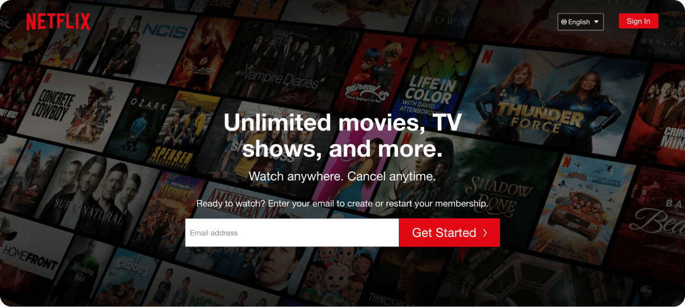
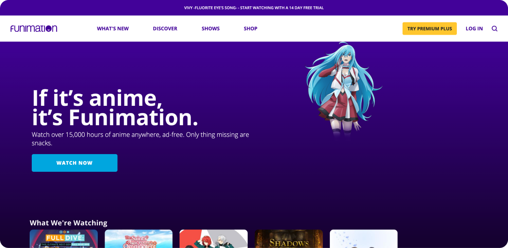

Redesigning Crunchyroll’s streaming experience
More and more people each year are turning to content streaming as a main form of home entertainment.
In addition, the COVID-19 pandemic has given people, especially western audiences, more time exploring new
content to enjoy from Korean dramas and even Japanese Anime.
I spent one week examining the west’s leading Anime streaming platform, Crunchyroll, and identifying existing problems
that’s currently producing a poor user experience. By the end of this redesign, I prodcued design solutions that could increase user satisfaction and
potentially benefit the business.
Project: Content streaming
Team: I’m alone 😔
Timeline: 1 week | August, 2020
Role: UX/UI, Strategy
Tech: Figma, Adobe Photoshop
Crunchyroll is not up-to-date with current design trends, compared to other content competitors, such as Netflix. In addition, users can’t
organize their favorited content into playlists and are often confused with unspecified content titles.
BUSINESS VALUE
Why should Crunchyroll use design trends?
It’s a known fact that the most successful businesses are design-oriented and that their products make a lasting impression on consumers.
I did an analysis on the net worth between Crunchyroll and Netflix in 2020. Crunchyroll was worth $1.175 billion while Netflix $225.79 billion.
However, I chose to do this analysis to measure the value of design and not compare both companies since each target specific audiences and media.
Design builds trust in users
For the average consumer, design is how the product looks. If a product looks good, it will attract attention. Now, how much more valuable is that product if consumers can easily use it?
In Crunchyroll’s case, even if users were required to pay a monthly subscription in exchange for the highest quality streaming service, as well as beautiful and clean aesthetics,
then users wouldn’t mind having their monthly expenses spent on Crunchyroll.
Happy users boost revenue and conversion
I also looked into Crunchyroll’s forms of revenue and conversion to see how it can influence my designs.
Aside from Crunchyroll’s main form of revenue, the premium subscription, I looked into conversion rates.
• Anime, Manga, and Drama content.
• SEO
• News page.
• Word of mouth.
PRIMARY RESEARCH
What do Crunchyroll users have to say?
With half of the research completed, I moved on to gain insight from current users. I conducted an online survey with 11 responses to pinpoint any problems within the experience.
Interview results
I found that users were not satisfied with the UI and they have no control over their favorited playlists.
“I do not like my watch queue rearranging by my last watched anime. I prefer to be in control of how my watch queue is ordered.”
- Interview response
“The design feels old.”
- Interview response
User insight summary
In summary of my interviews, I gathered the most common suggestions of improvement from the users:
• A UI update.
• Dark mode.
• A way to organize their queue lists.
COMPETITIVE ANALYSIS
Who are the competitors?
To close out the research stage, I looked into Netflix and Sony’s Anime content platform, Funimation.

Netflix

Funimation
PROTOTYPE & TEST
Putting my solutions to the test
To validate my research and designs, I tested with 4 participants. I prepared a short task to test the navigation experience. In addition, I asked for their
feedback on the new queue list and the overall UI layout.
View the prototype
100%
Overall task completion rate
"Easier to use than what Crunchyroll has right now."
- Tester feedback
"Smoother. Feels like Hulu."
- Tester feedback
CONCLUSION
Reflection & Learnings
As one of my first UX projects, this opportunity leveled up my UI design skills for web applications and my understanding of the UX process, especially UX research.
If I could go back, I would do more usability testing to maximize feedback on the proposed solutions.